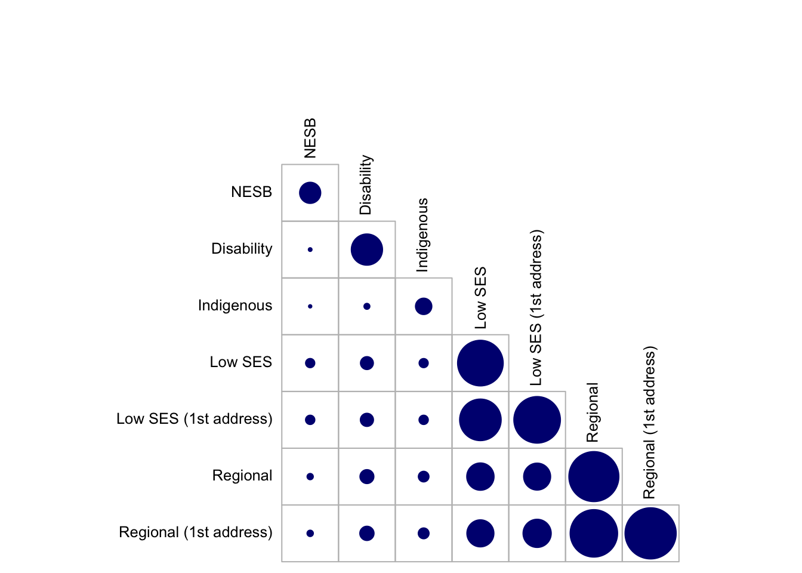

library(corrplot)corrplot 0.92 loadedlibrary(readxl)
library(tidyverse)── Attaching packages
───────────────────────────────────────
tidyverse 1.3.2 ──✔ ggplot2 3.4.0 ✔ purrr 1.0.1
✔ tibble 3.1.8 ✔ dplyr 1.1.0
✔ tidyr 1.3.0 ✔ stringr 1.5.0
✔ readr 2.1.3 ✔ forcats 0.5.2
── Conflicts ────────────────────────────────────────── tidyverse_conflicts() ──
✖ dplyr::filter() masks stats::filter()
✖ dplyr::lag() masks stats::lag()dataP<-read_excel("/Users/e5028514/Downloads/Equity group analysis.xlsx")%>%select(-1)
corrplot(as.matrix(dataP), is.corr = FALSE, tl.pos='n',
col = COL2('RdBu', 10),
type = 'upper',
cl.pos = 'n')